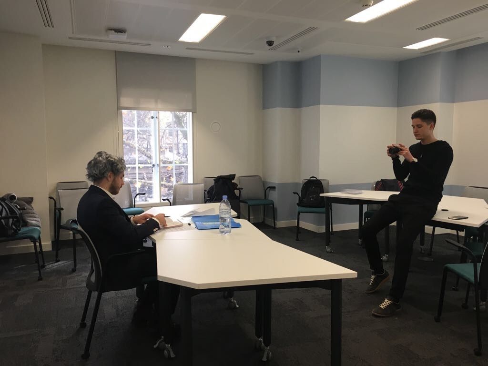
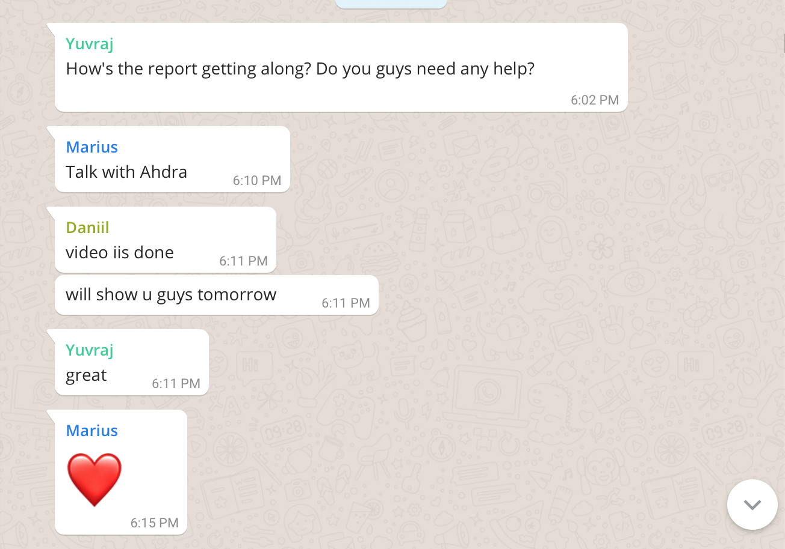
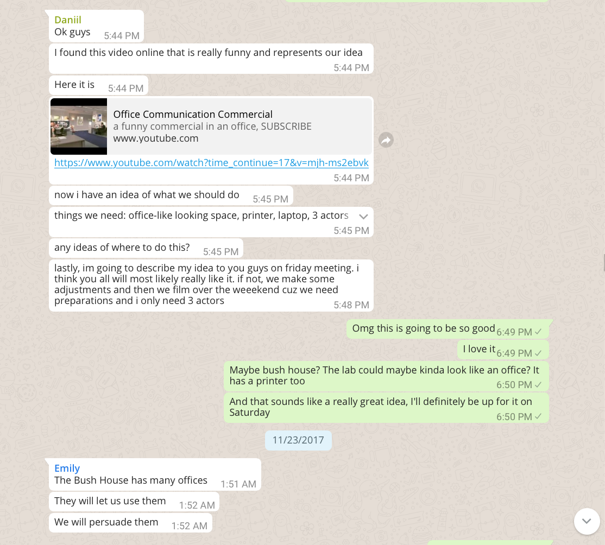
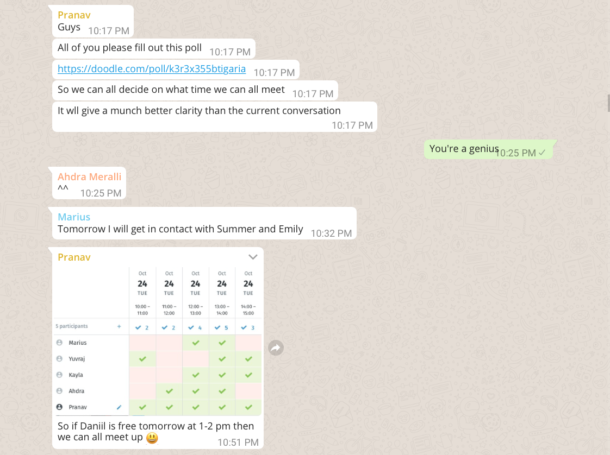
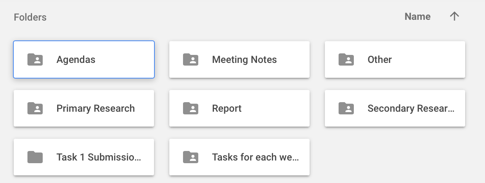
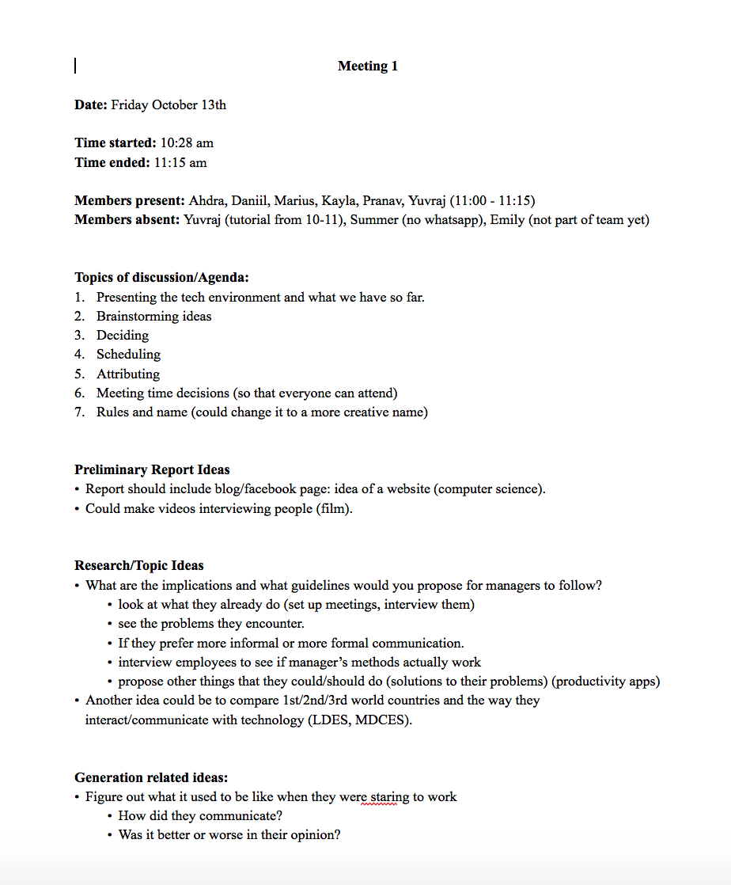
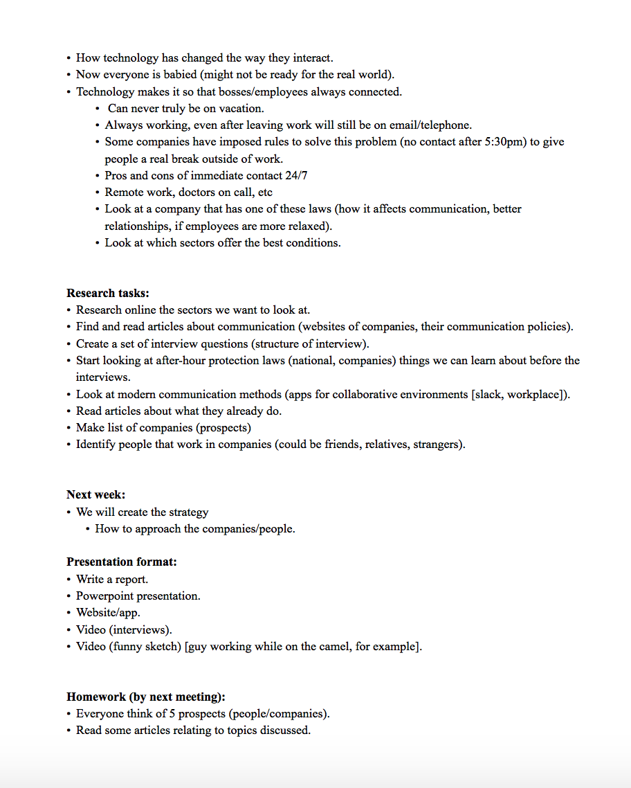
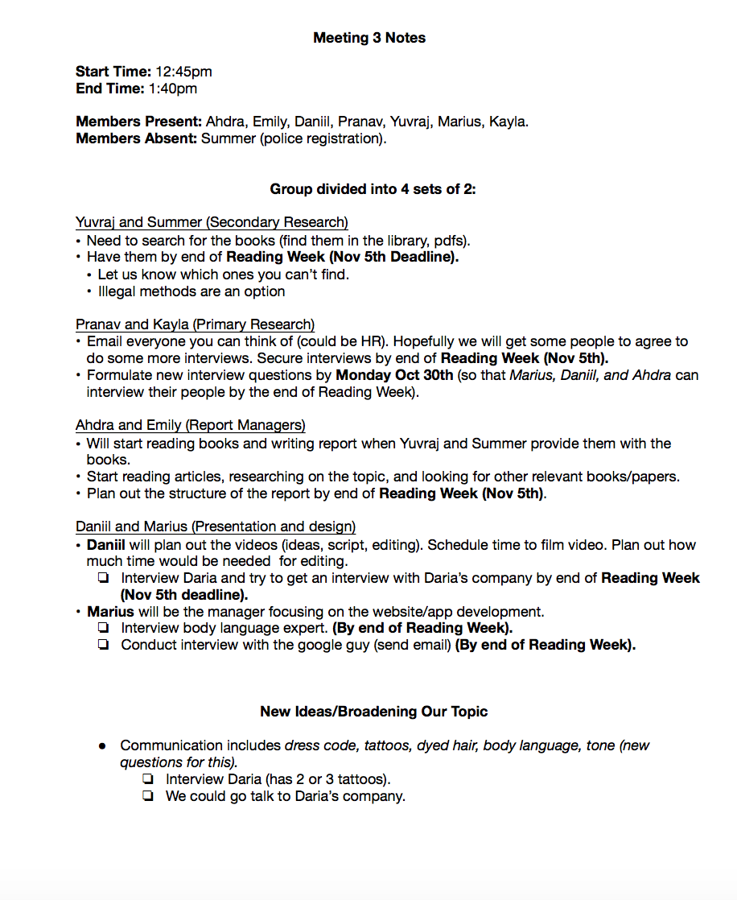
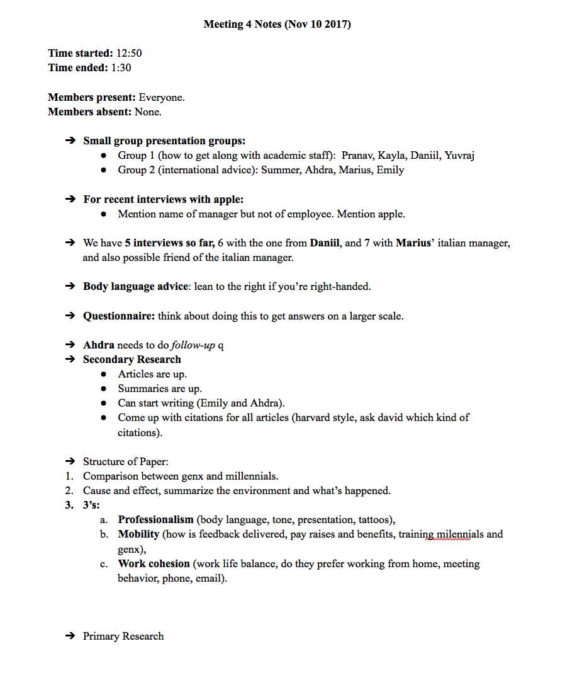

About Us
Team 7 is a group of goal-oriented, hardworking individuals that collaborate together to bring tasks to life. We view challenges as building blocks in the framework of learning; as an opportunity for growth and development.
Marius-Nicolae Toc - Chairman
Kayla Phillips Sanchez - Secretary
Pranav Bheemsetty - Director of Primary Research
Yuvraj Singh - Director of Secondary Research
Yitong Zhong - Assistant Director of Secondary Research
Daniil Plohih - Director of Presentation Production
Emily Radesch - Co-Director of Content Creation
Ahdra Merali - Co-Director of Content Creation
Group Learning Reflection
Coordinating our team was sometimes very difficult, especially due to our large size (8 group members), and the differences in our schedules. It seemed like every time we agreed upon a time there was at least one person who had a schedule clash. We tried to solve this problem by using software to coordinate our meetings. A survey was put out before each meeting, and each person checked off the times they were available at. This helped pick out the most popular time in a much quicker and more efficient manner.
At the beginning we also had problems assigning clear responsibilities. We wanted everyone to be involved in all sections of the project, but we were lacking coordination and accountability. This was solved by dividing the team up into pairs, where each pair had a main task. The first pair focused on primary research, the second pair on secondary research, the third pair on report writing, and the fourth pair on presentation and design. While we all ended up doing a little bit of each, this ultimately helped us hold people accountable and meet our deadlines.
Besides problems with scheduling and planning, we found that our team worked well together overall. We all got to know each other better through this project, and have become good friends. We all approached this project as a learning experience, making sure that each person was involved in each task, rather than completely separating ourselves into different groups. We made sure that we all learned how to do primary research and secondary research, and that we all contributed to the report and presentation. However, we also used each person’s strengths to our advantage. For example, we had a film major in our group, allowing us to make a professional looking website. We also had four computer science students, which helped us with website design, and group members who really enjoy writing, helping us with the report.
Our biggest problem was trying to get the project finalized at the end. We found that we had left many of the important things for the last moment, and had to meet several times to complete the last few but very important tasks. If we had to do this again, we would have definitely planned out our work better, aiming to finish our project at least a week in advance.
Overall, this project was a great learning experience, and allowed us to not only improve our interviewing, presentation, and writing skills, but also to plan and work as a group. After having done this, we feel that we are much more prepared for future group work, and can better deal with splitting responsibilities and tasks. Apart from all the learning, we also enjoyed spending time with each other and making new friends. We will definitely stay friends well after this class, and can help each other in our next modules, such as economics.
Meetings




Communication







